Members
Members
Shining Wang
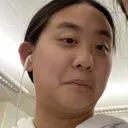Bryan Qi
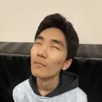Keshav Gollamundi
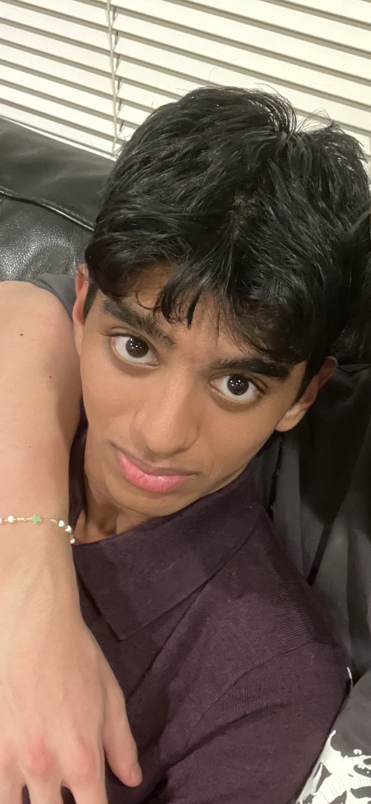Ryan Chen

Jack Liu

Jonathan Ma
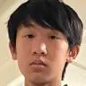Kaitlin Manoj

Pari Narang
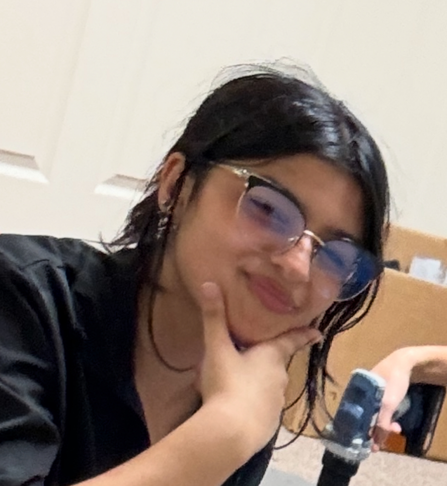Crystal Zeng
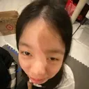Annie Jiang
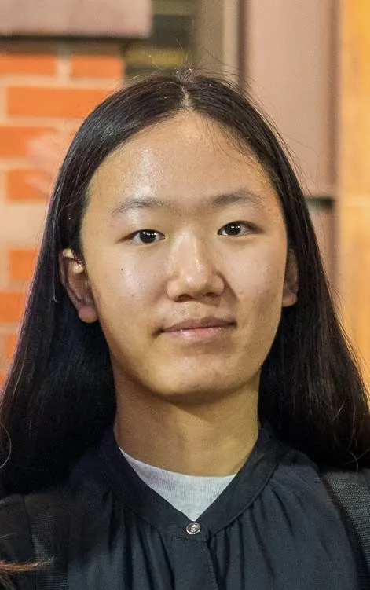Arkit Shah

Benjamin Sun
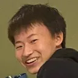Jason Qi
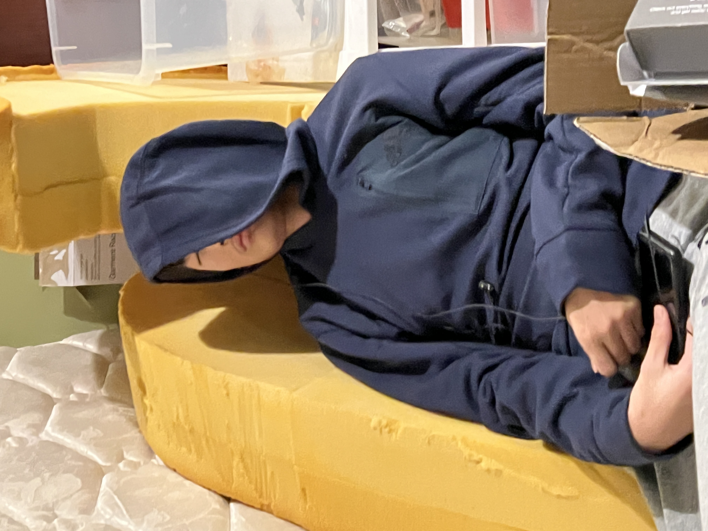Daniel Su
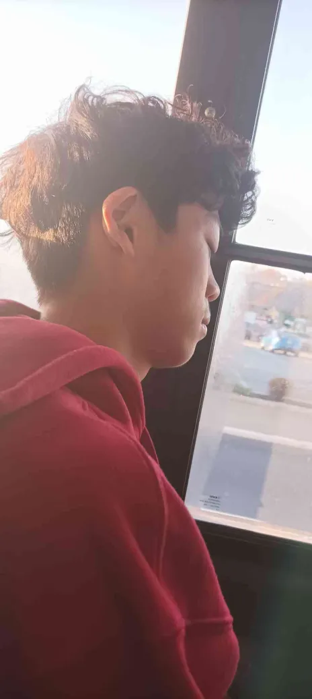Allison Zhou
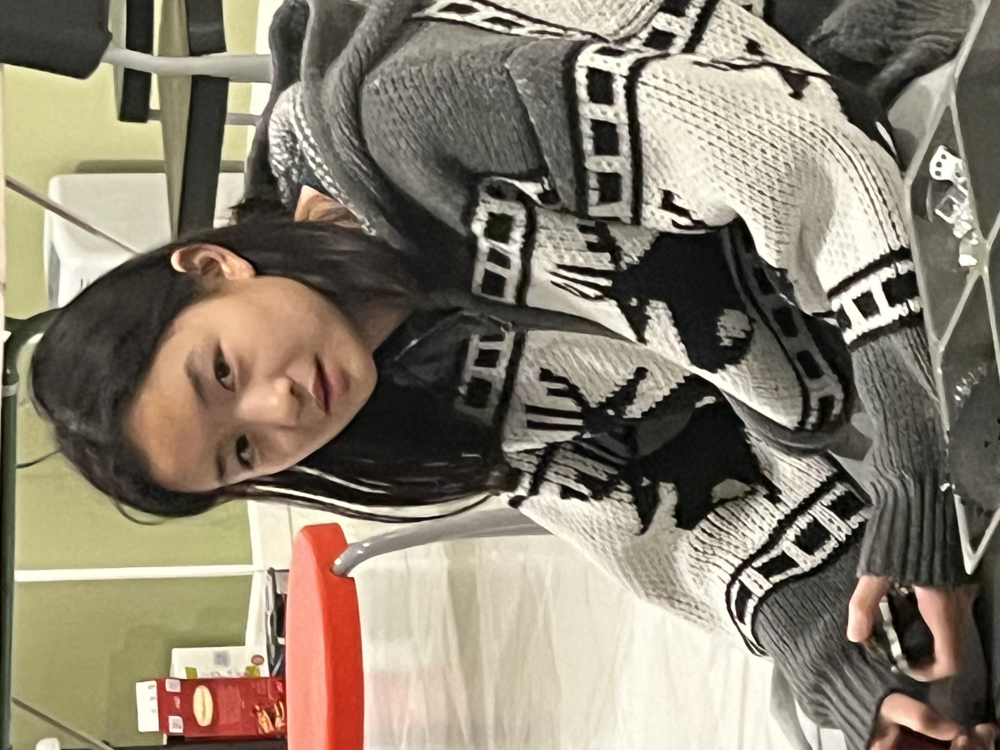Ms. Ziobro

Mr. Micciche

Mr. Novotny

Olivia Mei

Ryan Stern

Ryan Wu

Amanda Bialick

Zach Canent

Lanz Canent

Ming Ma

Brandon Kim
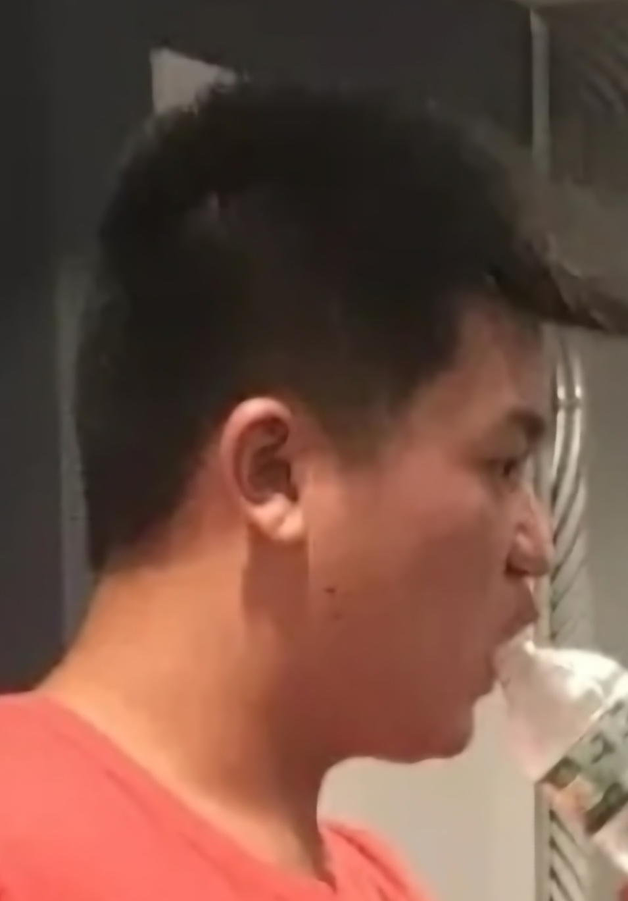Andrew Chan

Killian Deng

Perry Chen

Heainz Manoj

Anthony Chow

Thomas Lang

Ally Mintz

Lucy Xu

Divyank Jain

Ethan Dcosta

Nicolo Agbayani

Angelina Chu

Talia Rabban

Justin Kim

Arib Mahmud

Salem Crute

Preston Xu

Gene Liu

David Lev Samolkin

Janice Kim

Anna Xia

Katrina Pham

Ben Li

Pierce Rubenstein

Drew Fabian

Rachel Su

Max Zhuang

Jacob Dennis

Fillip Kizhner

Dmitry Sambuk

Andie Weiser-Schlesinger

Neha Parmar